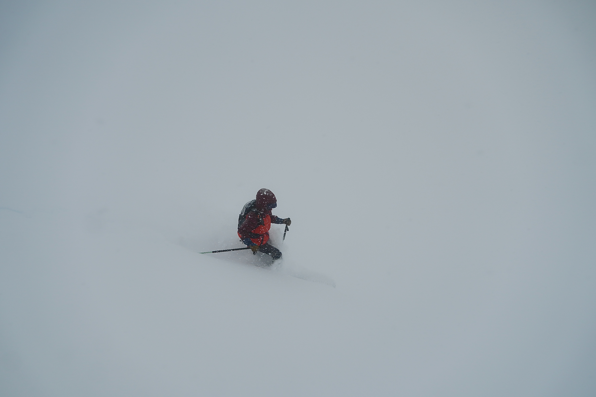
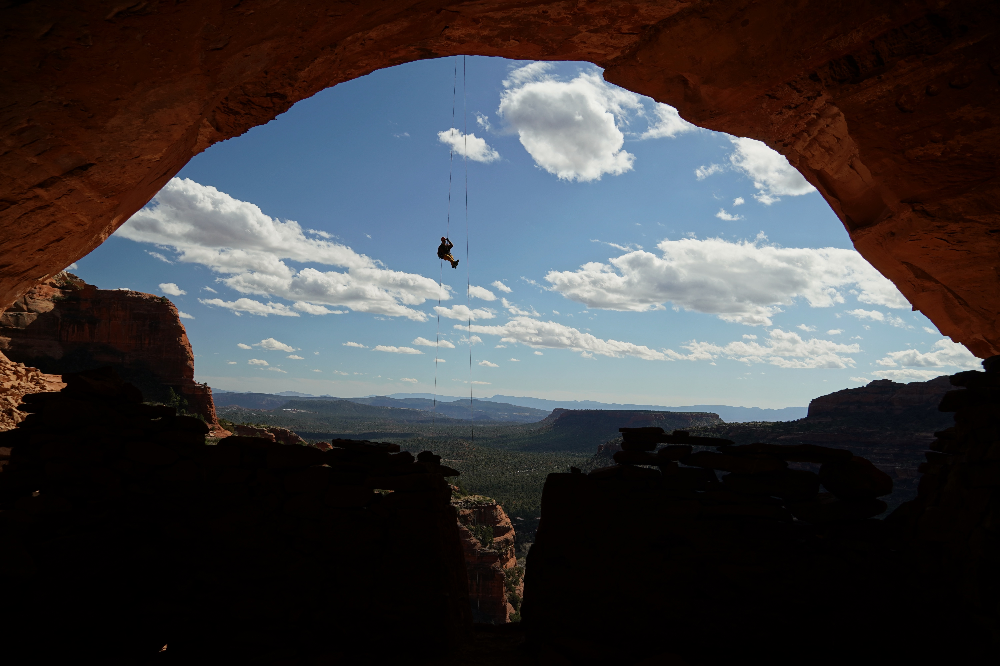

Exploring the Great Outdoors
Most my time spent away from a laptop is spent under the sun, even if transitively by way of thick cloud or fog. There is no cathedral more sublime, no crucible more stern, than the untouched majesty of the natural world. My adventures are frequently made better by doing it with fantastic people.

Jordan skiiing great snow in a white out. Wasatch Range, Utah

David doing a large rappel over a cave with an indigenous dwelling. Sedona, Arizona

Jordan climbing sandstone 2000ft above the floor. Zion National Park, Utah

Cooper graciously setting the boot pack. Stansburry Range, Utah